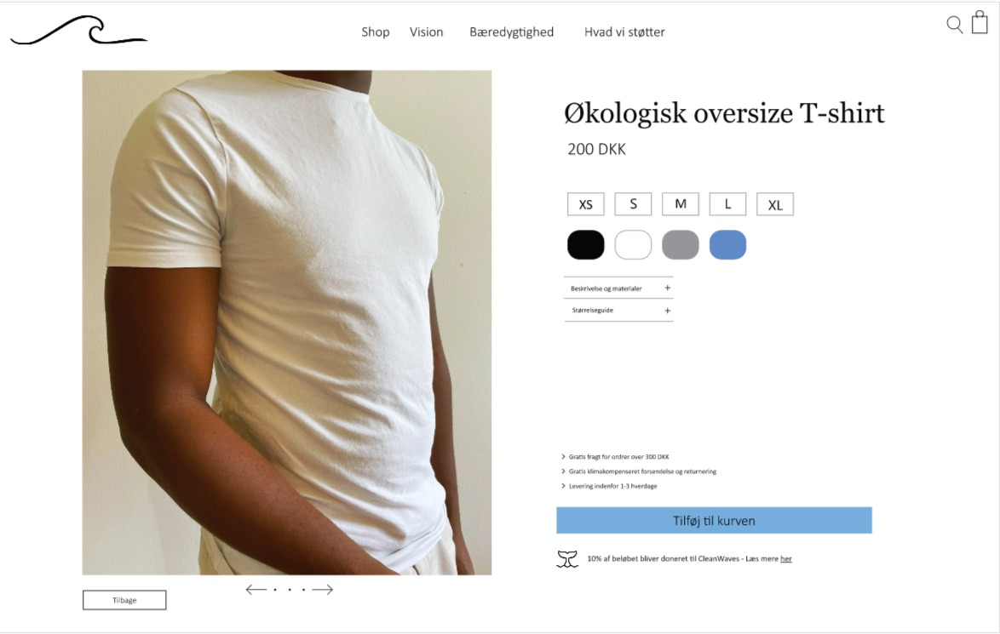
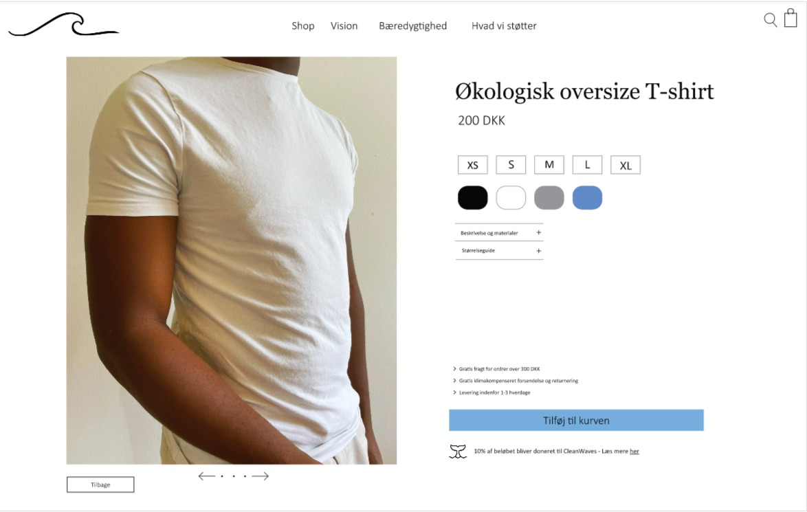

Tema 2 - Grundlæggende UX
Survey
I tema 3 bliver vi introduceret til UX, altså processen med at designe oplevelsen. Vi lærer om at gå fra idé til koncept, gennem research, test, interview og observation. Vi bruger vores indsigter til det endelige koncept.
I denne opgave, skulle jeg lave et survey som er en kvantitativ
spørgeskemaundersøgelse.
Jeg skulle analysere præferencer og sammenhænge om min målgruppe,
indenfor e-handel af T-shirt, online adfærd og bæredygtighed.
Af resultaterne fik jeg de indsigter, at mange er villige til at
købe bærerdygtigt og støtte det gode formål, men prisen har en
afgørende faktor, og at de føler mangel af viden om emnet. Ift.
online adfærd er et brugervenligt site, fri fragt, mobilvenligt og
hurtig levering det der betyder mest.
Disse indsigter tog jeg til mig til mit endelige koncept.


Prototype 2
I tema 2 sluttede vi processen af med en endelig high fidelty prototype, altså at den er overvejende visuel og klikbar. Denne opgave er resultatet af alle mine indsigter og viden jeg fik i min proces.
Jeg har benyttet webkonventioner, med klikbar logo i højre side og
indkøbskurv øverst til venstre. Navigationen er simpel og ligetil,
og man kan nemt klikke sig frem til webshoppens formål, så man ved
tydeligt hvad man støtter.
Knapper er tydeligt markeret i en farve, der adskiller sig fra
baggrunden. Der er mulighed for at se deltajer om produktet, og
deltajer om fragt, returning og levering.
Jeg løste opgaven bla. med copywriting og microcopy, som indeholder vigtige og effektive teknikker, der får brugeren til at handle, og hjælper dem med at interagere med produktet. Copywriting indebærer fx USP, keywords, beskrivelser, persuation og testimonials/social proof. Jeg fandt ud af i mit survey, at fri fragt har stor betydning. Så jeg bruger en persuation teknik, med en "fri fragt" proklamering på forsiden, der motivere eller overtaler brugeren til at handle.
En anden indsigt fra mit Survey var, at mange føler de mangler
viden om bæredygtighed.
Derfor lavede jeg et side, der kun handler om tips og
informationer om bæredygtighed.
 
